零基础漏洞挖掘
前言
目前在读大学生，挖过半年SRC，发现实验室刚入的大一新生有大多数都不是很了解某个具体网站的漏洞要如何挖掘，想借这篇文章总结一下漏洞挖掘的基本步骤。
基础
网上有很多相似的文章，却没讲挖洞需要具备的前提条件是什么，我来讲一下自己的看法：
对漏洞的认知
我认为，挖洞的第一步，是要学习漏洞是怎么产生的，有什么样的修复方案，如果对漏洞进行了某些修复，能否绕过。
举个例子：
SQL注入的产生是由于代码中将用户可控的字符带入进了数据库查询语句中，没有进行过滤/过滤的并不完善，即可产生SQL注入。
而SQL注入一般又在哪几个点：增/删/改/查
但凡网站中有涉及到这些地方的点，我们都可以尝试去测试是否存在SQL注入。
但是如果我们不知道以上知识，我们又该如何挖掘SQL注入这种类型的漏洞呢？
没有具体的挖洞步骤
拿到一个网站的时候，我们需要使用已有的知识在脑中做出一个挖掘步骤图。
比如如果你拿到的是一个购物网站，第一步是做什么，而你拿到某个登陆系统，又该做什么。
拿到一个网站，如果你不知道该测什么，连想法都没有，那要怎么挖洞呢。
对应防护没有思考对应解决办法
很多人遇到网站存在WAF就放弃了，但是有没有想过绕过这个WAF呢。
比如某网站存在WAF，在单位时间内如果对该网站发出请求超过一定测试，IP就会被ban，这时候很多人就放弃了，但是有没有想过使用代理池来扫描等解决方案。
还有，有的网站ban IP并不一定是基于请求数，可能是获取你的IP并判断IP访问次数，这个时候是不是就可以思考一下他是怎么获取到你的IP的，是使用可伪造的headers头获取的吗？那是不是就可以考虑使用随机XFF/UA等方式来绕过这种黑名单策略。
前期
之前看过一篇文章：《漏洞挖掘的本质是信息搜集》，我其实很认可这句话，因为你挖洞是基于你所搜集的资产来挖的，资产的量决定了你当前水平可挖掘的漏洞的质量。
我就不分什么常规非常规了，能搜集资产的方式我都一一列出来。
天眼查
从天眼查的知识产权栏中，可以找到网站申请的一些产权，其中包含了网站资产。
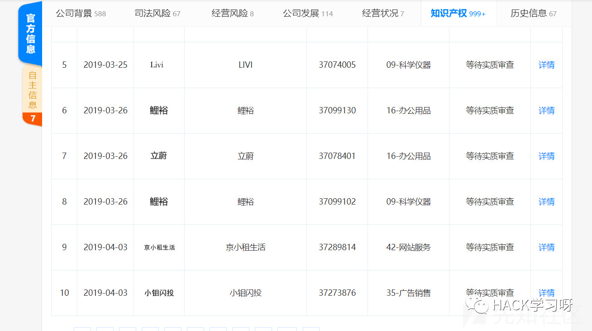
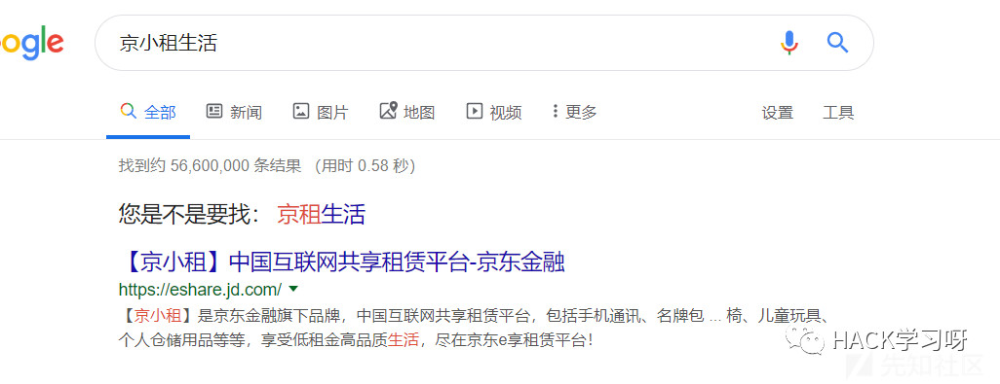
ICP备案查询
使用接口查询企业ICP备案，可以获取在某企业名下备案的所有网站资产。
以某东为例：
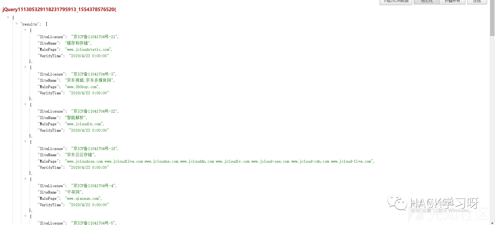
之前写了一个现成的脚本，可以批量查询企业ICP备案，只需要传入域名就行。
单线程：
import requests
import threading
import re
targets = []
names = []
def icp_info(host):
url = "https://icp.chinaz.com/ajaxsync.aspx?at=beiansl&callback=jQuery111305329118231795913_1554378576520&host=%s&type=host"%host
html = requests.get(url,timeout=(5,10)).text
pattern = re.compile('SiteName:"(.*?)",MainPage:"(.*?)"',re.S)
info = re.findall(pattern,html)
for i in range(0,32):
try:
name = info[i][0]
target = info[i][1]
print("%s:%s"%(name,target))
if target not in targets:
targets.append(target)
with open("icp_info.txt","a+") as f:
f.write("%s:%s"%(name,target) + "\n")
continue
else:
continue
except Exception as e:
continue
def start():
with open("url.txt","r+") as a:
for b in a:
b = b.strip()
icp_info(host=b)
a.close()
def main():
thread = threading.Thread(target=start,)
thread.start()
if __name__ == '__main__':
main()先知的代码块可能不太友好，可以看看图片：
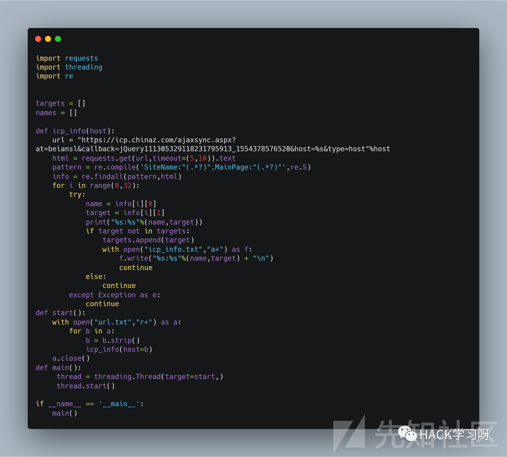
使用方法：urls.txt传入你需要查询的网站，会自动对获取到的domain进行去重。
维基百科
使用维基百科对某些添加资产词条的网站可以获取到其部分资产信息：
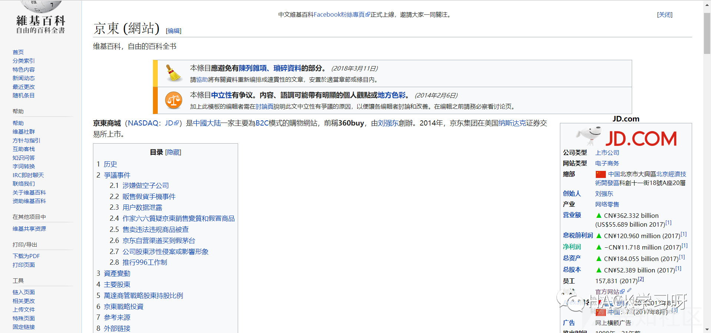
但是某东没有添加该词条，所以获取不到相关信息。
Whois
步骤：
先对已知网站进行whois查询，我们这里可以去微步查询历史whois，可以获取到历史的whois信息。
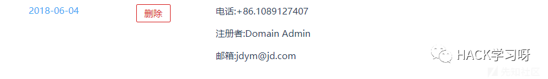
利用这些信息，我们就可以反查whois，获取该注册者/电话/邮箱下的相关域名。
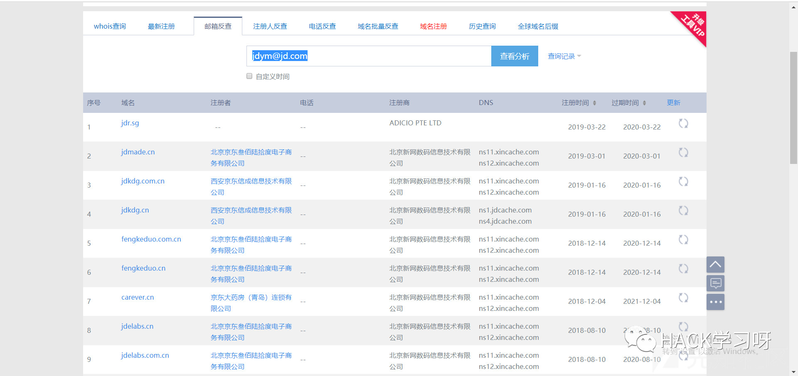
我正在写一个脚本，即批量获取whois->反查whois->提取关键信息->去重。
写好了我会发到github上，可关注：https://github.com/p1g3/
shodan/zoomeye/fofa
我们可以直接搜索网站官网，可以获得一些页面/头部中含有该关键字的网站。
zoomeye：
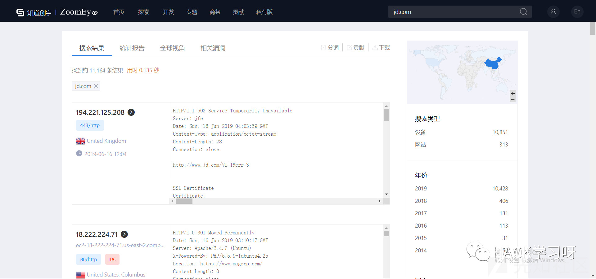
shodan：
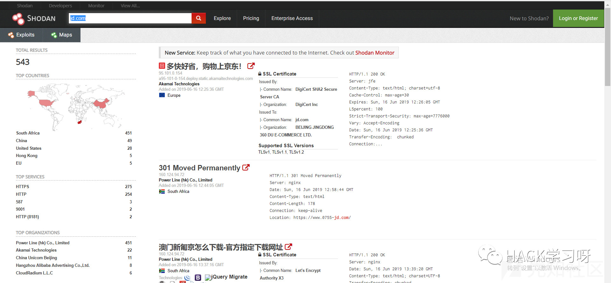
fofa：
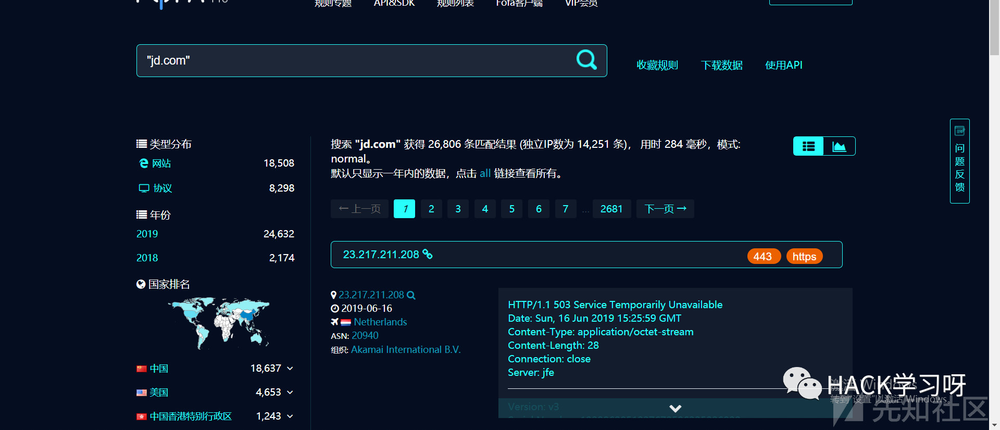
此外，我们还可以利用这些搜索引擎的搜索语法来获取资产。
shodan可以搜索指定公司的资产，也可以利用特定的网站logo来获取资产。
比如我们发现某东的网站icon基本为同一个，我们就可以先去搜索jd.com，获取其带有icon的网站，随便选一个获取hash后利用搜索语法来获取指定icon的网站。
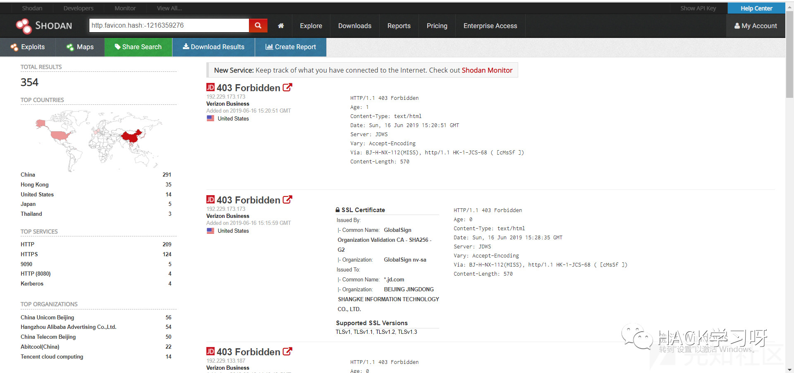
fofa可以直接利用domain关键字来搜索特定网站下的子域名：
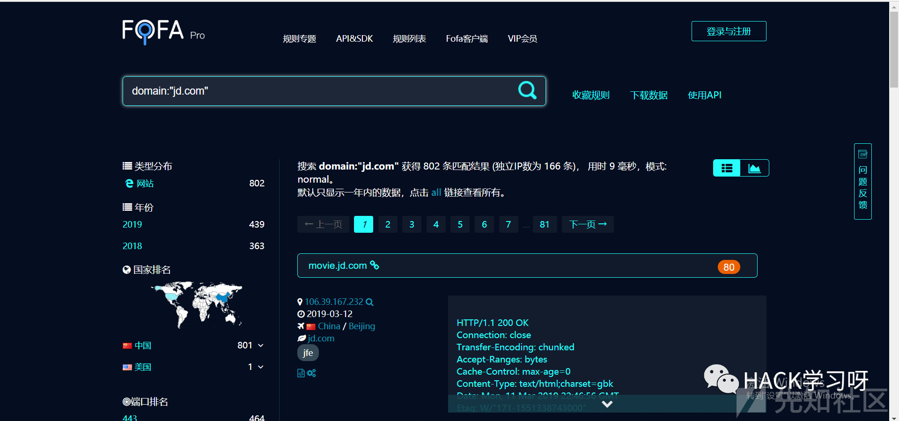
zoomeye可以利用hostname关键字来获取主机列表中的资产：
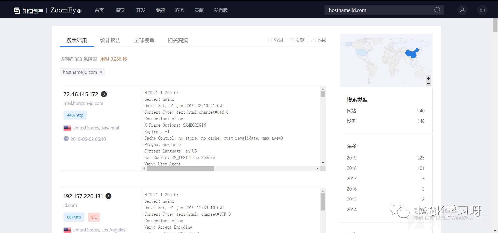
Github
github也可以用来获取资产，但是大多数情况下还是用于获取敏感信息(用户名/密码/邮箱)等。
当然也可以用来搜索资产：
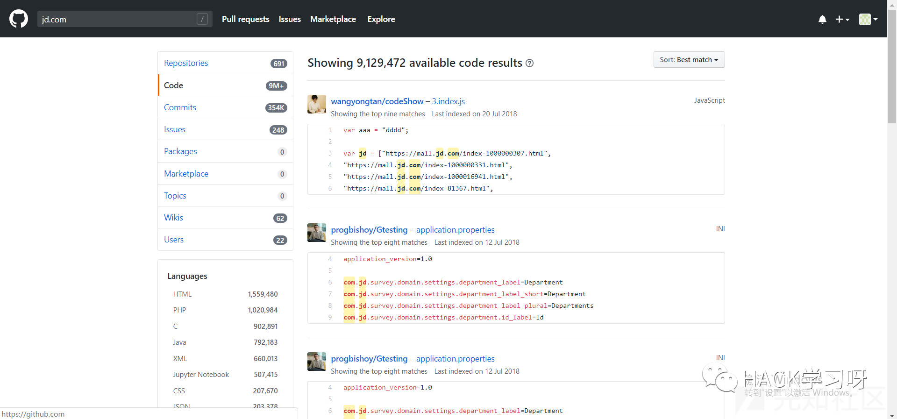
这里推荐一款平时在用的github敏感信息搜集工具：
https://github.com/FeeiCN/GSIL
我们可以自定义规则，来获取自己所需要的信息。
微信公众号
这里还是以某东为例：
我们不仅可以搜集企业公众号，还可以搜集企业的小程序，因为其中大部分都是会与WEB端的接口做交互的。
公众号：
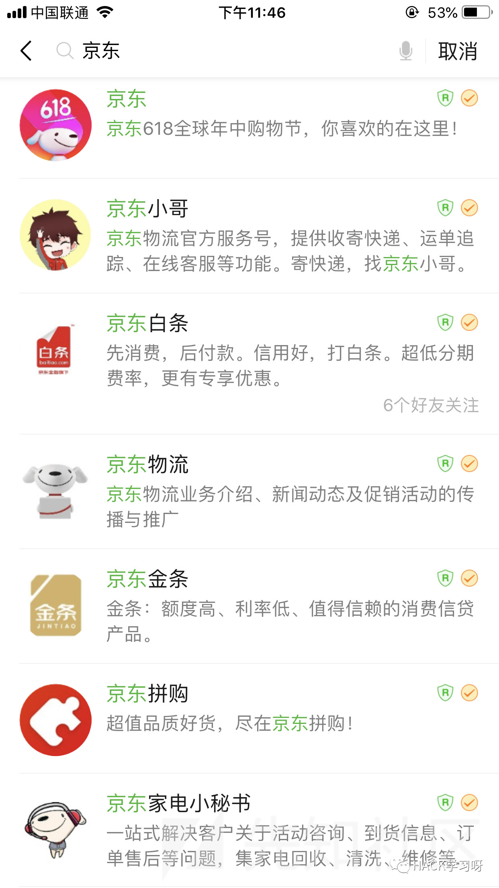
小程序：
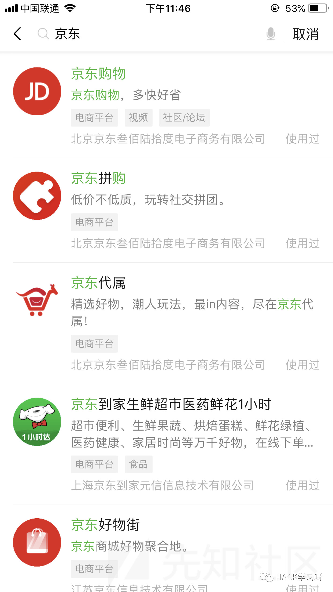
APP
我们不光需要从企业网站中寻找该企业开发的APP，也可以自己通过关键字来获取APP，因为其中有的APP是内测的，只是上线了，但是还未对外公布。
以某东为例：

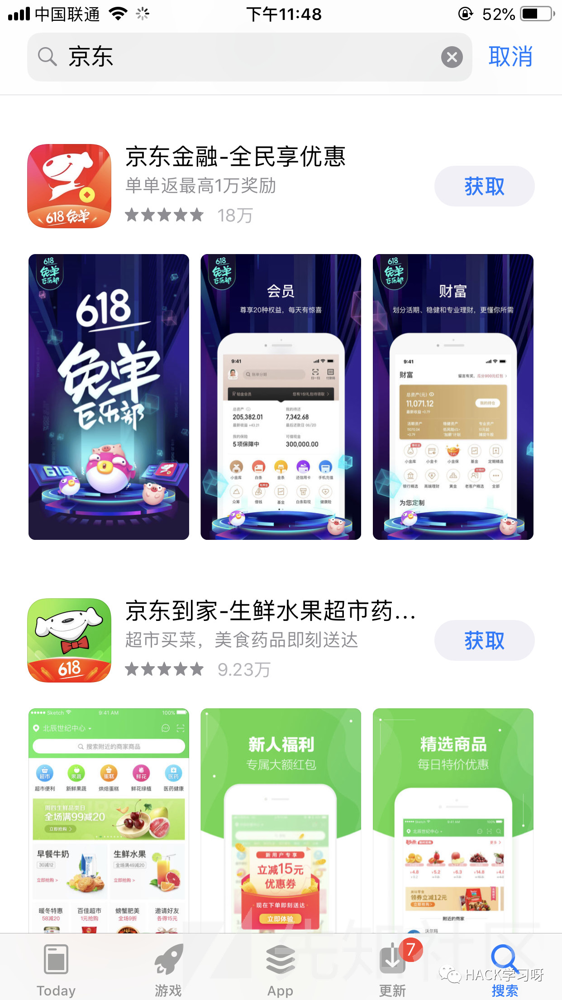
我们除了直接搜索企业关键字外，还可以获取其开发者的历史开发记录：
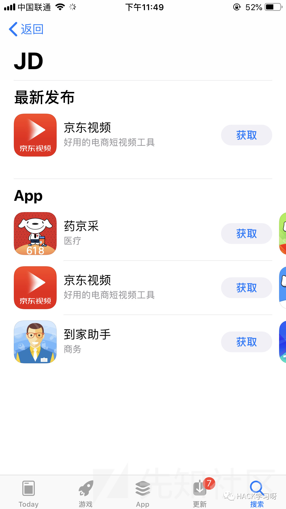
这样循环：APP->开发者->APP
在这过程中我们往往能获取到许多APP，后续再对其进行相关的渗透。
互联网搜索引擎
我们可以使用Google/Bing/Baidu等网站对某个网站进行资产搜集：
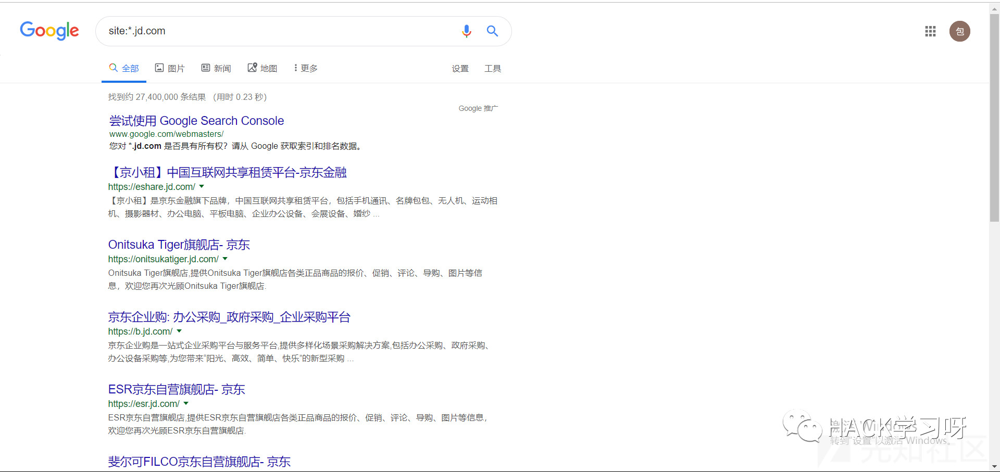
当然，搭配搜索语法食用效果更佳：
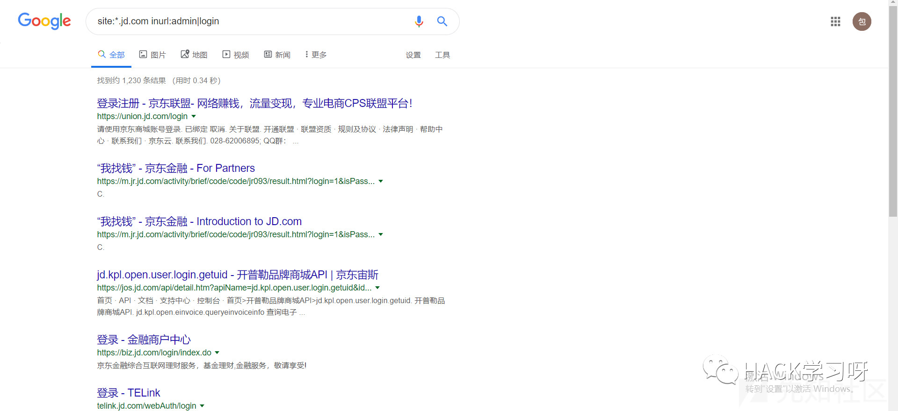
APK搜集资产
之前提到了搜集APP资产，有的APP实际上并不只是使用用户可用的那几个接口，可能还有接口在代码中，这时候可以用工具将这些URI提取出来。
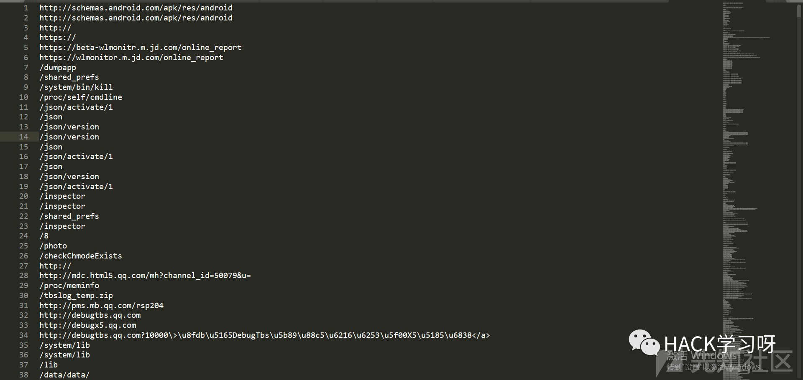
这里推荐两款从APK中提取有效信息的工具：
https://github.com/0xPwny/Apkatshu
https://github.com/s0md3v/Diggy
JS获取敏感接口
很多刚挖洞的师傅可能不太注意JS，但实际上JS中可能隐藏了很重要的接口，其中可能就存在未授权等漏洞，这里推荐朋友写的一款从JS中提取有效域名/api的工具。
JSFINDER：https://github.com/Threezh1/JSFinder
调的是LinkFinder的正则，可以循环爬取，即：
爬取domain->获取domain主页面下的link->获取domain主页面下的js->获取link页面下的js->解析所有js并提取出有效信息
中期
到了此步我们已经搜集了企业的大部分资产了，剩下的就是获取更多资产，即子域名/IP/PORT/服务...等。
子域名
sublist3r：
这是一款很不错的工具，调用了几个搜索引擎以及一些子域名查询网站的API，具体可以去项目页查看。
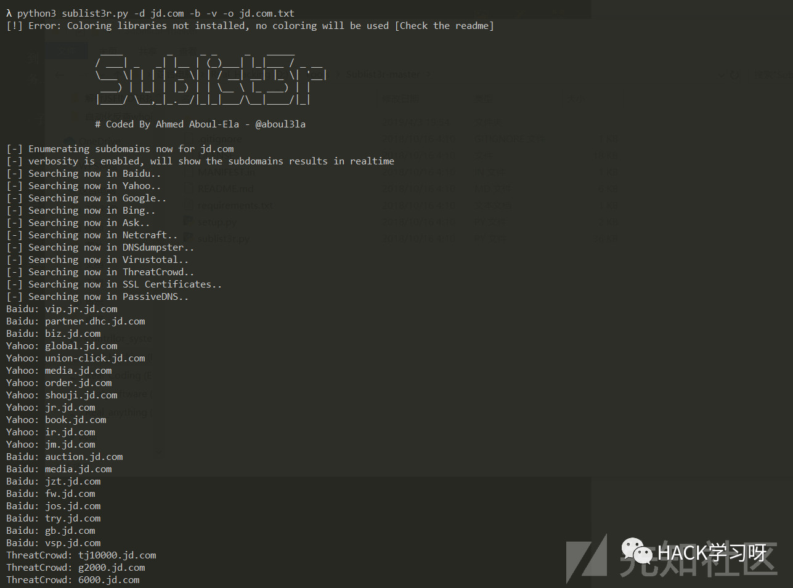
sublist3r：https://github.com/aboul3la/Sublist3r
subfinder：
这款工具调用的API有很多：
Ask，Archive.is，百度，Bing，Censys，CertDB，CertSpotter，Commoncrawl，CrtSH，DnsDB，DNSDumpster，Dnstable，Dogpile，Entrust CT-Search，Exalead，FindSubdomains，GoogleTER，Hackertarget，IPv4Info，Netcraft，PassiveTotal，PTRArchive，Riddler ，SecurityTrails，SiteDossier，Shodan，ThreatCrowd，ThreatMiner，Virustotal，WaybackArchive，Yahoo
初次使用需要我们自己配置API接口的账号/密码/key...等。
图片源于youtube：
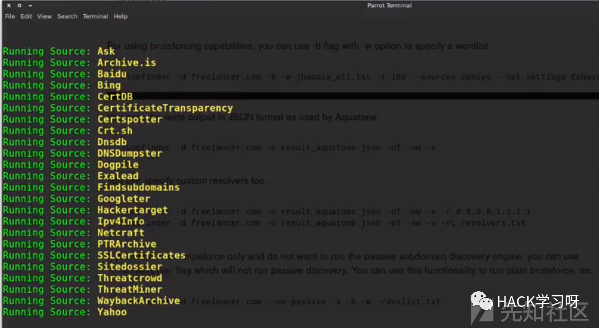
subfinder：https://github.com/subfinder/subfinder
github：
LAYER：
很早之前法师写的一款工具，可以自动过滤泛解析的域名，字典+API的方式来搜集资产，当然更多的是字典，速度也相当可观：
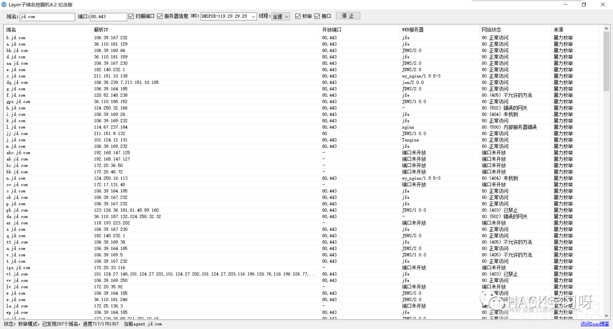
altdns：
这款工具我一般是到最后采集完了所以子域名并去重后使用的，他可以帮助我们发现一些二级/三级十分隐蔽的域名。
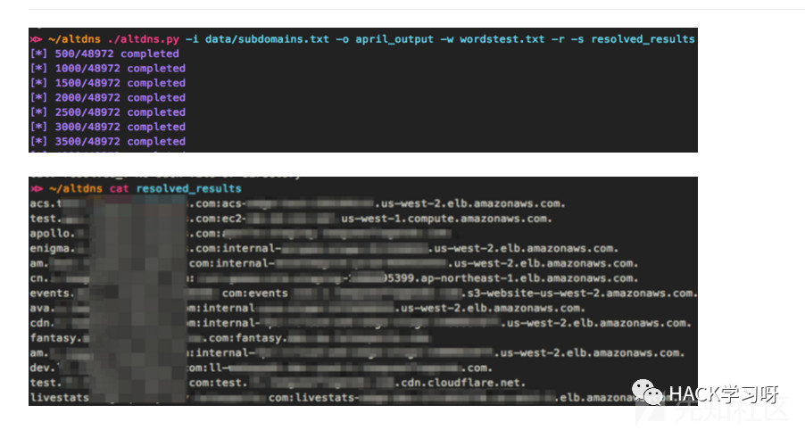
以vivo举例：
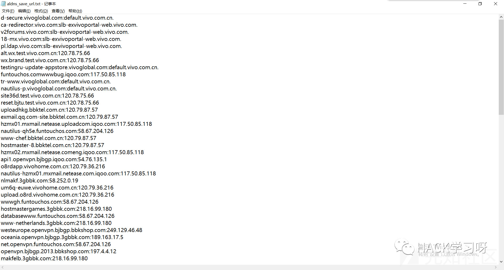
altdns：https://github.com/infosec-au/altdns
IP
关于企业IP的搜集我们可以直接写脚本去调ip138的接口，可以获取到当前解析IP和历史解析IP，还是比较全的。
ip138：http://www.ip138.com/

获取完企业的IP范围之后，我们就可以用nmap/masscan等工具对其端口/服务进行扫描，这个过程可能会有点久。
我们需要先判断企业是直接买了一个C段的IP，还是只使用一个IP，再选择扫描整个C段或者是单个IP。
这是我之前使用nmap对某东域名批量进行C段扫描的结果：
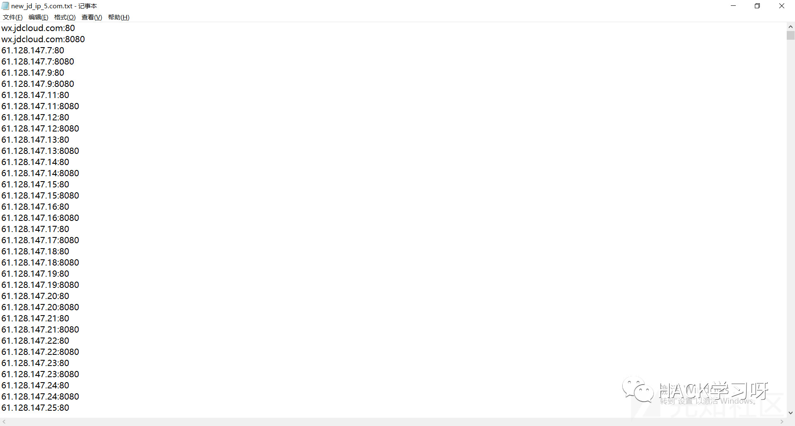
我们的注意力可以放在几个WEB服务端口，和一些可能存在漏洞的服务端口，如redis/mongodb等。
至此，资产搜集基本已经结束了，我们可以将搜集到的资产选择性的入库，这样之后获取新资产时就可以对比一下是否存在。
后期
这部分可能是我写的最少的部分。
获取完资产之后，就是苦力活了，我的步骤是，先把获取到的资产丢到扫描器(awvs/nessus)里先扫一遍，避免一些没必要的体力劳动。
nessus主要用来扫描端口服务的漏洞以及一些系统CVE，awvs主要用来扫描WEB端的漏洞，如XSS/SQLI/CSRF/CORS/备份文件...等等。
指纹识别部分可以使用云悉的，可以自己写个插件然后申请个API：
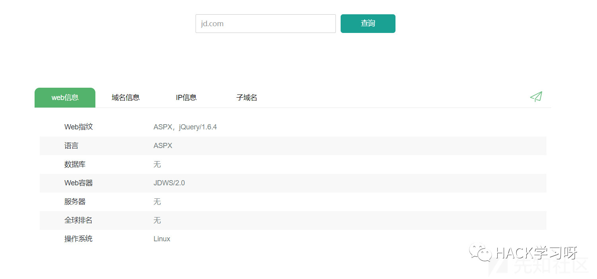
我还会用BBSCAN/weakfilescan来扫描网站中可能存在的敏感信息，如.git/.svn/备份文件等等。
BBSCAN：https://github.com/lijiejie/BBScan
weakfilescan：https://github.com/ring04h/weakfilescan
之后的基本就是手动劳动了，对获取到的资产利用已有知识一个个的测。

作者：p1g3
来源：先知社区
如有侵权，请联系删除